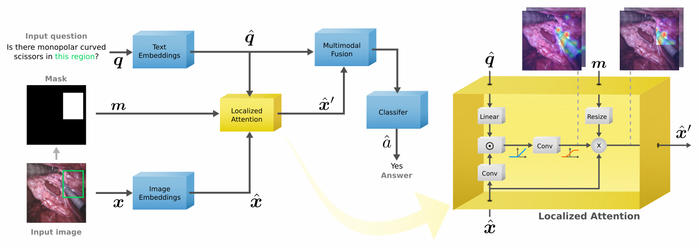
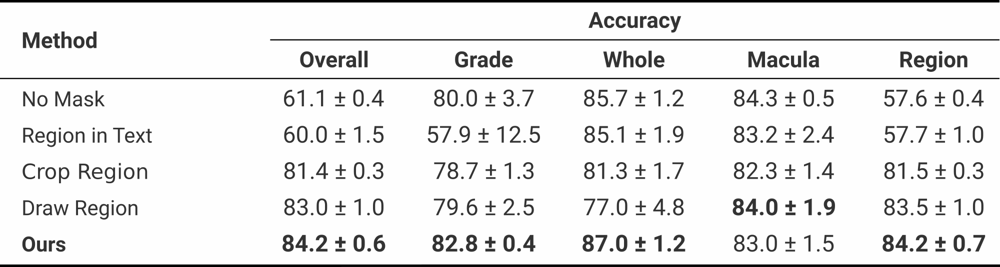
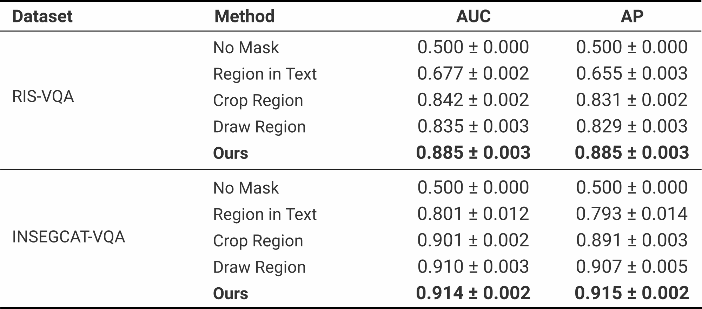
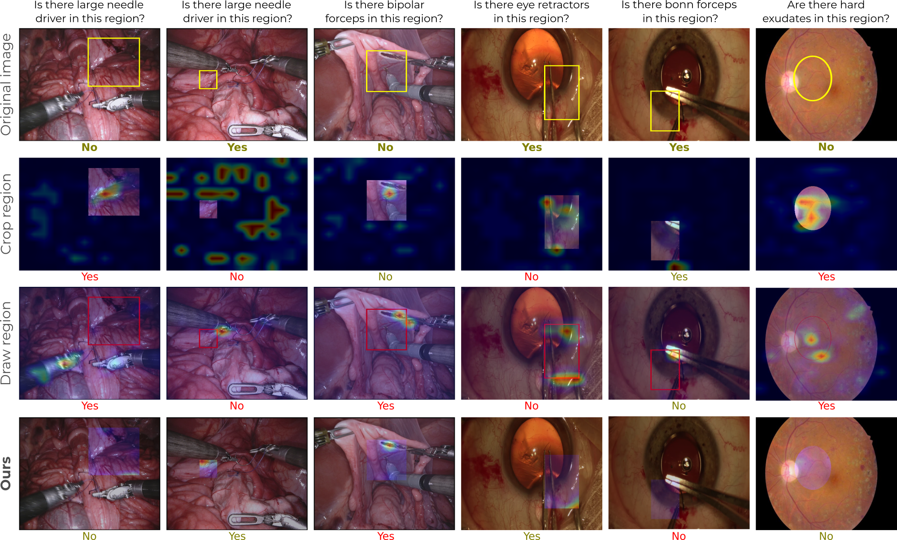

Localized Questions in Medical Visual Question Answering
Sergio Tascon-Morales, Pablo Márquez-Neila, Raphael Sznitman
University of BernPresented at
Abstract
Visual Question Answering (VQA) models aim to answer natural language questions about given images. Due to its ability to ask questions that differ from those used when training the model, medical VQA has received substantial attention in recent years. However, existing medical VQA models typically focus on answering questions that refer to an entire image rather than where the relevant content may be located in the image. Consequently, VQA models are limited in their interpretability power and the possibility to probe the model about specific image regions. This paper proposes a novel approach for medical VQA that addresses this limitation by developing a model that can answer questions about image regions while considering the context necessary to answer the questions. Our experimental results demonstrate the effectiveness of our proposed model, outperforming existing methods on three datasets.
Method
Our method resembles the process that a human would follow when asked a question about a specific region of an image. This is, considering the evidence related to the question in the whole image to understand the scene from a higher perspective, and then focusing on the region to answer the question. As shown in the figure below, we do this by applying the target region to the attention maps, but only after the model has access to the entire image. We call this Localized Attention. With this, the model is able to highlight the image regions that are related to the question, and then focus on the region.

Results
We measure performance on three different datasets and for different baselines. The following tables summarize our results.

DME-VQA
Compared to other methods, our proposed approach bring benefits for most of the question types, showing the efficacy of our method.

RIS-VQA and INSEGCAT-VQA
Especially on the RIS-VQA dataset, our method brings significant improvements in the performance metrics. We hypothesize that these larger boosts in performance are due to the type of tools in the dataset, which tend to be similar.
Examples
The following are qualitative examples produced by our method on the different datasets.

Bibtex Citation
@inproceedings{tascon2023localized,
title={Localized Questions in Medical Visual Question Answering},
author={Tascon-Morales, Sergio and M{\'a}rquez-Neila, Pablo and Sznitman,Raphael},
booktitle={International Conference on Medical Image Computing and Computer-Assisted Intervention},
pages={--},
year={2023}
organization={Springer}
}